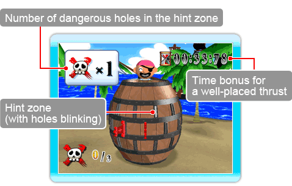

Pop-Up Logic is a 1-player mode.
Unlike the multiplayer Pop-Up Party, Pop-Up Logic features more than one
hole to avoid. While playing, you can catch a glimpse of how many of these
holes there are.
Clear each stage by either thrusting your sword into every safe hole, or by finding all the dangerous holes and covering them with an X.
● Playing Pop-Up Logic
You must select a hole within the time limit and thrust in your sword. If the hole is safe, the Captain will show you how many of the holes within that area are to be avoided.
Use these hints to guide your sword thrusts, staying away from the dangerous holes. For every successful sword thrust, extra time will be added to the total time remaining.
Thrust your sword into a dangerous hole and you'll lose a significant amount of time. You can keep playing as long as there is time remaining, but once you run out of time, it's curtains for you!
○ Hint display screen

● Stage Clear
Clear one stage and you'll move onto the next, with any remaining time carrying over to the next stage. The number and position of dangerous holes will be reset, along with the swords you've already inserted. The number of dangerous holes increases with each stage.
Make it as far as you can and the number of stages you cleared just might be recorded in the rankings. You can view these on the ranking screen.